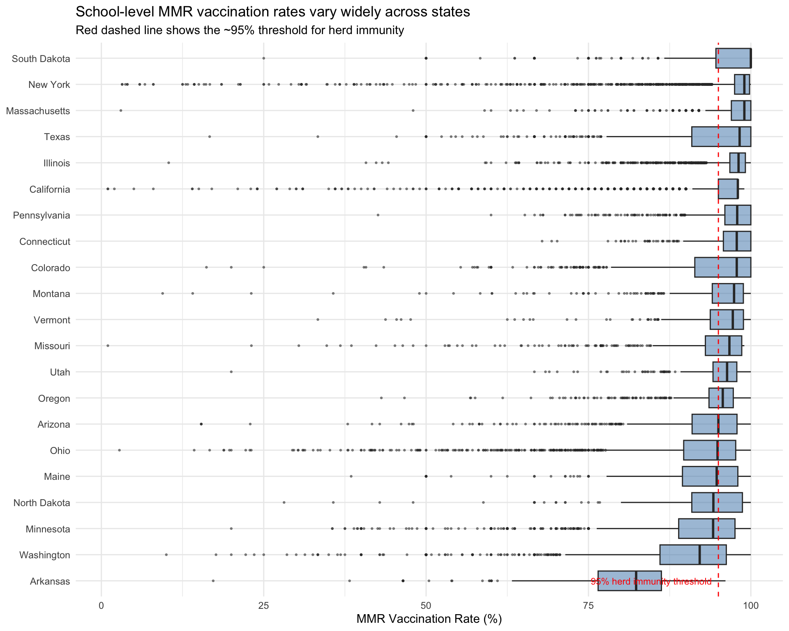
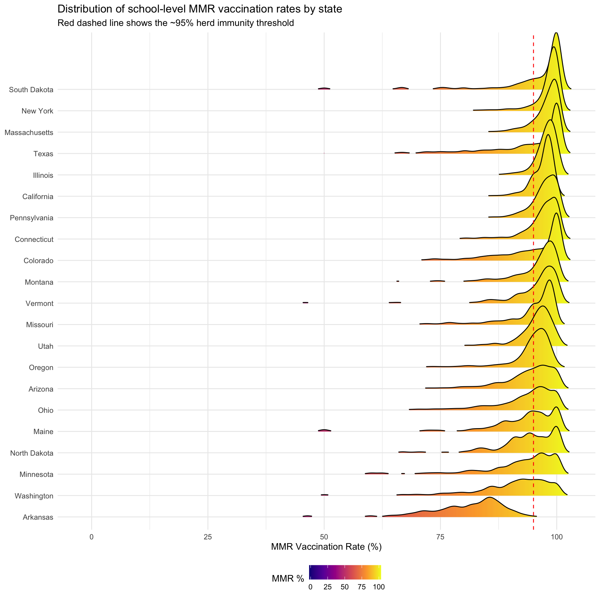
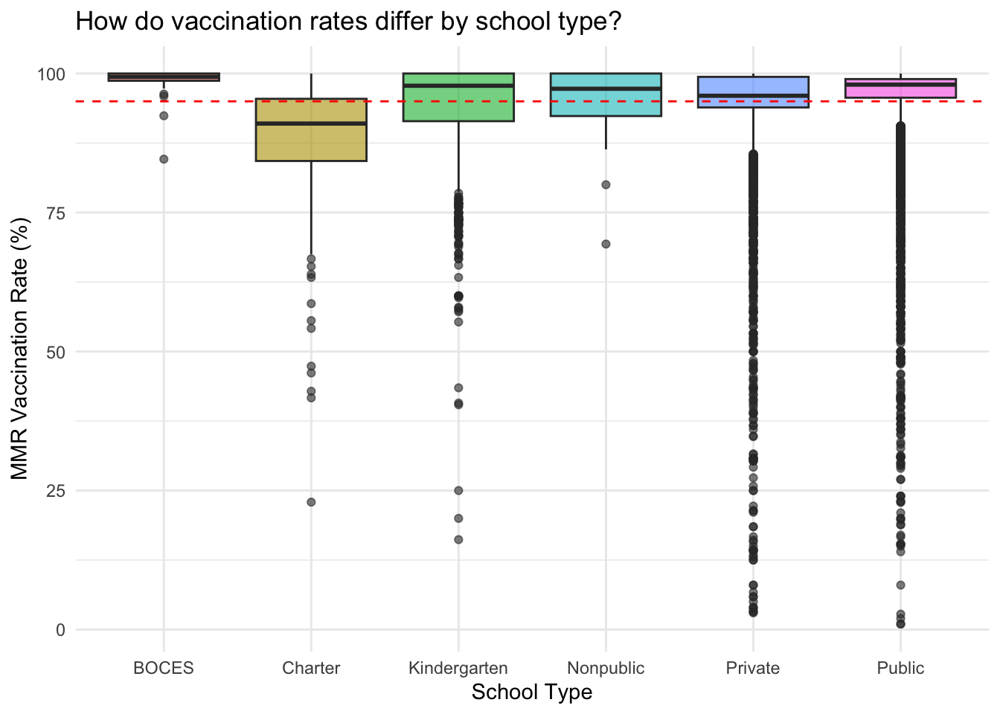
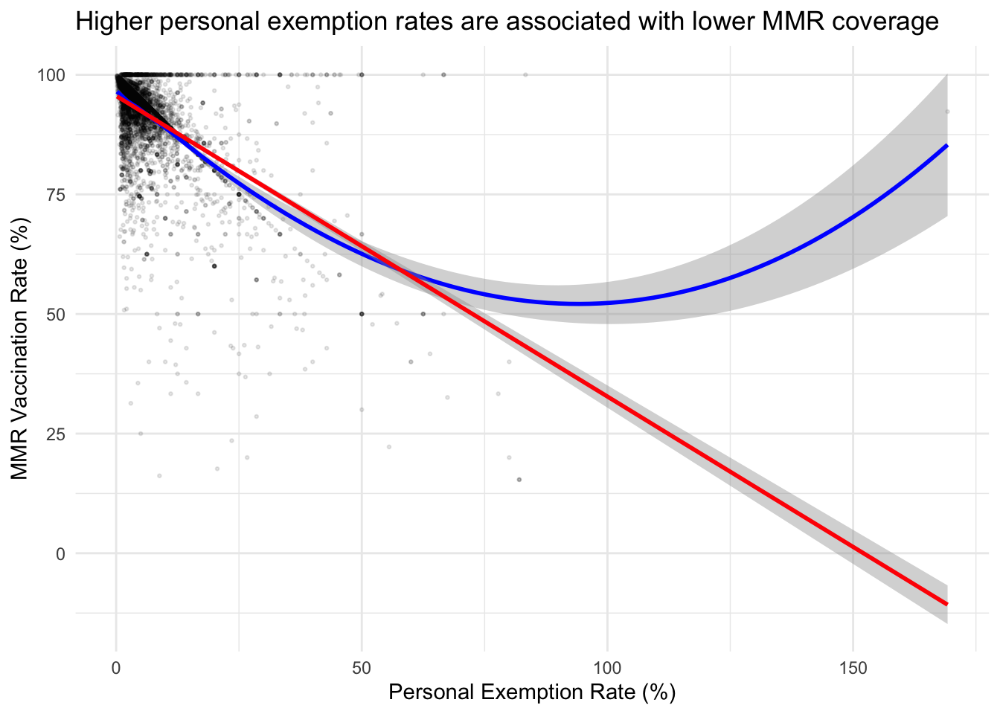

Code
library(dplyr)
library(readr)
library(ggplot2)
library(forcats)
library(ggridges)
measles <- readr::read_csv(
'https://raw.githubusercontent.com/rfordatascience/tidytuesday/main/data/2020/2020-02-25/measles.csv'
)Tidy Tuesday 2020, Week 9
This exploration uses the Tidy Tuesday measles vaccination dataset (R4DS Online Learning Community 2023), originally compiled by The Wall Street Journal (The Wall Street Journal 2019). The dataset covers school-level MMR (Measles, Mumps, and Rubella) and overall vaccination rates across 32 US states, along with exemption rates (religious, medical, and personal).
library(dplyr)
library(readr)
library(ggplot2)
library(forcats)
library(ggridges)
measles <- readr::read_csv(
'https://raw.githubusercontent.com/rfordatascience/tidytuesday/main/data/2020/2020-02-25/measles.csv'
)glimpse(measles)Rows: 66,113
Columns: 16
$ index <dbl> 1, 2, 3, 4, 5, 6, 7, 8, 9, 10, 10, 11, 12, 13, 14, 15, 15, 16…
$ state <chr> "Arizona", "Arizona", "Arizona", "Arizona", "Arizona", "Arizo…
$ year <chr> "2018-19", "2018-19", "2018-19", "2018-19", "2018-19", "2018-…
$ name <chr> "A J Mitchell Elementary", "Academy Del Sol", "Academy Del So…
$ type <chr> "Public", "Charter", "Charter", "Charter", "Charter", "Public…
$ city <chr> "Nogales", "Tucson", "Tucson", "Phoenix", "Phoenix", "Phoenix…
$ county <chr> "Santa Cruz", "Pima", "Pima", "Maricopa", "Maricopa", "Marico…
$ district <lgl> NA, NA, NA, NA, NA, NA, NA, NA, NA, NA, NA, NA, NA, NA, NA, N…
$ enroll <dbl> 51, 22, 85, 60, 43, 36, 24, 22, 26, 78, 78, 35, 54, 54, 34, 5…
$ mmr <dbl> 100, 100, 100, 100, 100, 100, 100, 100, 100, 100, 100, 100, 1…
$ overall <dbl> -1, -1, -1, -1, -1, -1, -1, -1, -1, -1, -1, -1, -1, -1, -1, -…
$ xrel <lgl> NA, NA, NA, NA, NA, NA, NA, NA, NA, NA, NA, NA, NA, NA, NA, N…
$ xmed <dbl> NA, NA, NA, NA, 2.33, NA, NA, NA, NA, NA, NA, 2.86, NA, 7.41,…
$ xper <dbl> NA, NA, NA, NA, 2.33, NA, 4.17, NA, NA, NA, NA, NA, NA, NA, N…
$ lat <dbl> 31.34782, 32.22192, 32.13049, 33.48545, 33.49562, 33.43532, 3…
$ lng <dbl> -110.9380, -110.8961, -111.1170, -112.1306, -112.2247, -112.1…summary(measles) index state year name
Min. : 1 Length:66113 Length:66113 Length:66113
1st Qu.: 429 Class :character Class :character Class :character
Median : 997 Mode :character Mode :character Mode :character
Mean :1608
3rd Qu.:2133
Max. :8066
type city county district
Length:66113 Length:66113 Length:66113 Mode:logical
Class :character Class :character Class :character NA's:66113
Mode :character Mode :character Mode :character
enroll mmr overall xrel
Min. : 0.0 Min. : -1.00 Min. : -1.00 Mode:logical
1st Qu.: 46.0 1st Qu.: -1.00 1st Qu.: -1.00 TRUE:109
Median : 80.0 Median : 95.00 Median : 87.00 NA's:66004
Mean : 131.9 Mean : 63.17 Mean : 54.09
3rd Qu.: 129.0 3rd Qu.: 98.00 3rd Qu.: 96.10
Max. :6222.0 Max. :100.00 Max. :100.00
NA's :16260
xmed xper lat lng
Min. : 0.040 Min. : 0.17 Min. :24.55 Min. :-124.50
1st Qu.: 1.000 1st Qu.: 2.84 1st Qu.:35.69 1st Qu.:-117.63
Median : 2.000 Median : 5.00 Median :40.21 Median : -89.97
Mean : 2.906 Mean : 6.78 Mean :39.15 Mean : -96.28
3rd Qu.: 3.530 3rd Qu.: 7.55 3rd Qu.:42.18 3rd Qu.: -81.75
Max. :100.000 Max. :169.23 Max. :49.00 Max. : 80.21
NA's :45122 NA's :57560 NA's :1549 NA's :1549 Many MMR values are coded as -1, which represents missing data. Let’s recode these and examine what we have.
measles_clean <- measles |>
mutate(
mmr = if_else(mmr < 0, NA_real_, mmr),
overall = if_else(overall < 0, NA_real_, overall)
)
measles_clean |>
summarise(
n_schools = n(),
n_states = n_distinct(state),
mmr_available = sum(!is.na(mmr)),
overall_available = sum(!is.na(overall)),
pct_mmr_available = round(100 * mmr_available / n_schools, 1)
)# A tibble: 1 × 5
n_schools n_states mmr_available overall_available pct_mmr_available
<int> <int> <int> <int> <dbl>
1 66113 32 44157 38889 66.8measles_clean |>
filter(!is.na(mmr)) |>
mutate(state = fct_reorder(state, mmr, .fun = median, na.rm = TRUE)) |>
ggplot(aes(x = mmr, y = state)) +
geom_boxplot(outlier.size = 0.5, fill = "steelblue", alpha = 0.5) +
geom_vline(xintercept = 95, linetype = "dashed", colour = "red") +
annotate("text", x = 94, y = 1, label = "95% herd immunity threshold",
hjust = 1, colour = "red", size = 3) +
labs(
x = "MMR Vaccination Rate (%)",
y = NULL,
title = "School-level MMR vaccination rates vary widely across states",
subtitle = "Red dashed line shows the ~95% threshold for herd immunity"
) +
theme_minimal()
The boxplots above highlight many outliers. A ridgeplot shows the full distribution shape for each state, making it easier to see whether low-coverage schools are isolated exceptions or part of a broader pattern.
measles_clean |>
filter(!is.na(mmr)) |>
mutate(state = fct_reorder(state, mmr, .fun = median, na.rm = TRUE)) |>
ggplot(aes(x = mmr, y = state, fill = after_stat(x))) +
geom_density_ridges_gradient(scale = 3, rel_min_height = 0.01) +
scale_fill_viridis_c(option = "C", name = "MMR %") +
geom_vline(xintercept = 95, linetype = "dashed", colour = "red") +
labs(
x = "MMR Vaccination Rate (%)",
y = NULL,
title = "Distribution of school-level MMR vaccination rates by state",
subtitle = "Red dashed line shows the ~95% herd immunity threshold"
) +
theme_minimal() +
theme(legend.position = "bottom")Picking joint bandwidth of 1.02
measles_clean |>
filter(!is.na(mmr), !is.na(type), type != "") |>
ggplot(aes(x = type, y = mmr, fill = type)) +
geom_boxplot(alpha = 0.6, show.legend = FALSE) +
geom_hline(yintercept = 95, linetype = "dashed", colour = "red") +
labs(
x = "School Type",
y = "MMR Vaccination Rate (%)",
title = "How do vaccination rates differ by school type?"
) +
theme_minimal()
measles_clean |>
filter(!is.na(mmr), !is.na(xper), xper >= 0) |>
ggplot(aes(x = xper, y = mmr)) +
geom_point(alpha = 0.1, size = 0.5) +
geom_smooth(method = "loess", colour = "blue", se = TRUE) +
geom_smooth(method = "lm", colour = "red", se = TRUE) +
labs(
x = "Personal Exemption Rate (%)",
y = "MMR Vaccination Rate (%)",
title = "Higher personal exemption rates are associated with lower MMR coverage"
) +
theme_minimal()`geom_smooth()` using formula = 'y ~ x'
`geom_smooth()` using formula = 'y ~ x'
Following tidy data principles (Wickham 2014), let’s identify schools with notably low coverage.
measles_clean |>
filter(!is.na(mmr), mmr < 80) |>
count(state, sort = TRUE) |>
head(10) |>
knitr::kable(
col.names = c("State", "Schools with <80% MMR"),
caption = "States with the most schools below 80% MMR vaccination rate"
)| State | Schools with <80% MMR |
|---|---|
| Ohio | 274 |
| Washington | 252 |
| Arkansas | 222 |
| California | 186 |
| New York | 185 |
| Minnesota | 162 |
| Colorado | 88 |
| Texas | 80 |
| Arizona | 75 |
| Missouri | 60 |